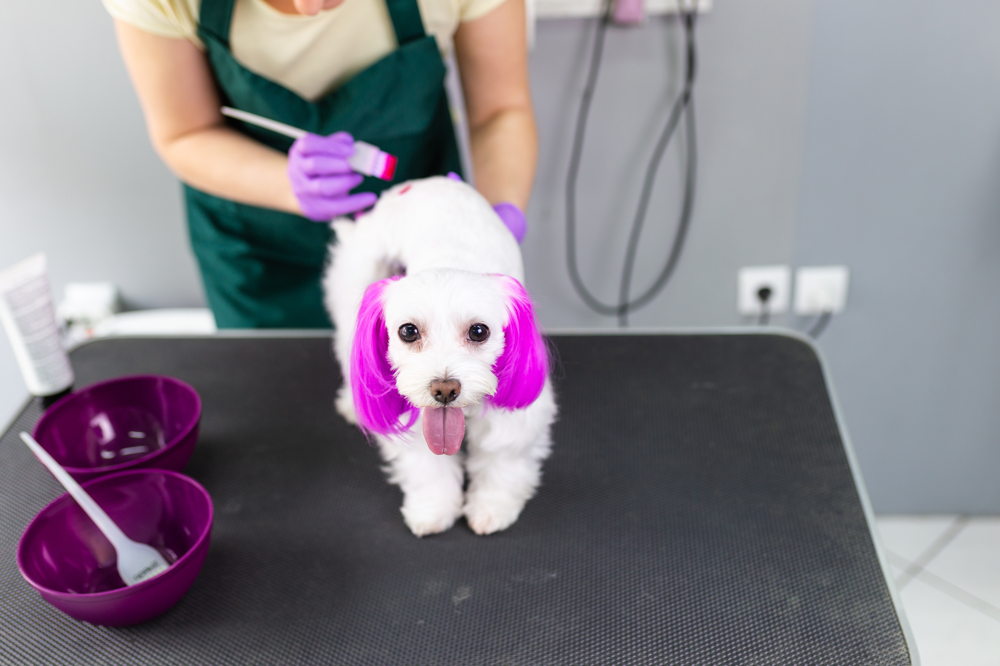
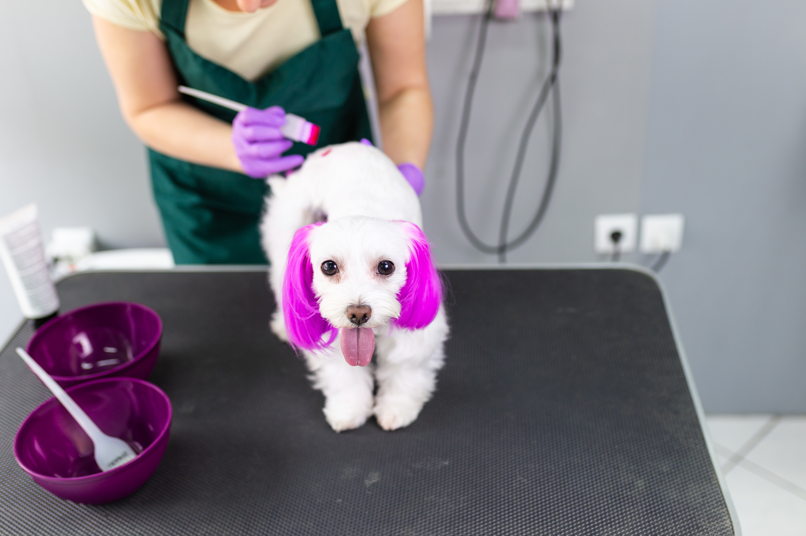
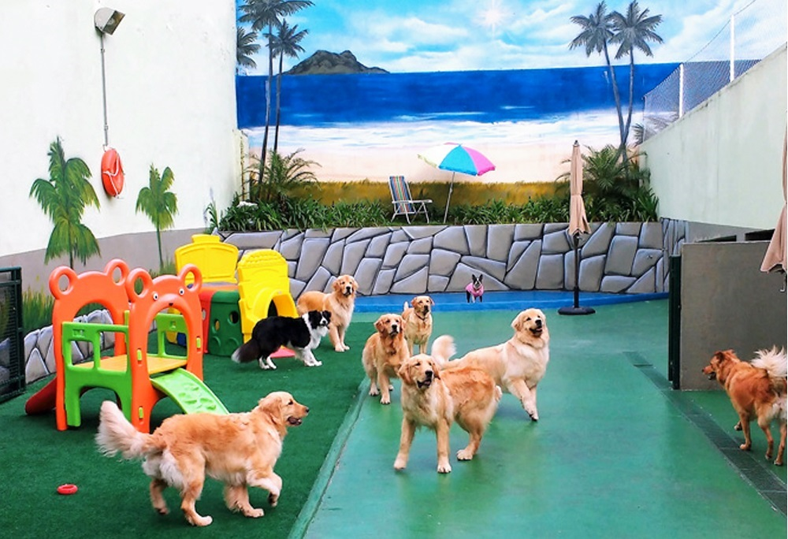
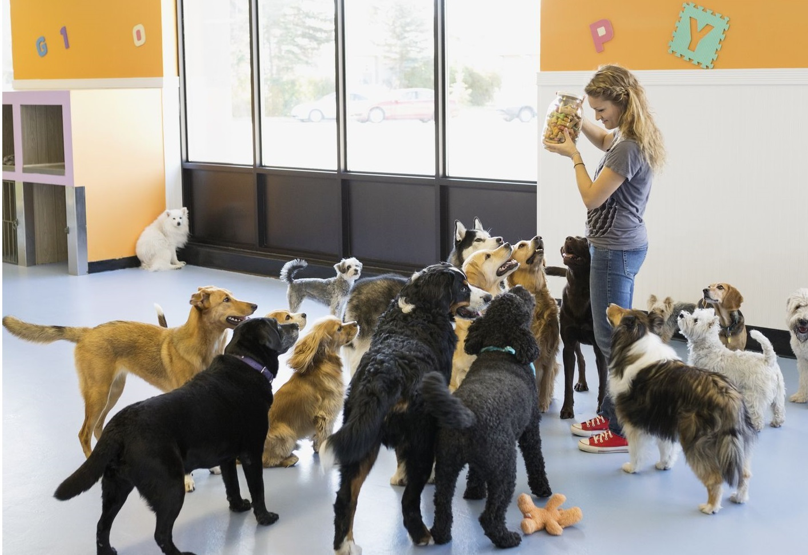

Estética inteligente e day care!
Enquanto seu aumigo estiver conosco, você será informado a cada passo realizado, através do nosso aplicativo, com notificações a cada mudança de passo/estação de serviço, permitindo que você possa acompanhar todos os serviços que estão sendo realizados com seu peludo e consiga saber a hora estimada para que todos os serviços sejam finalizados.
O acompanhamento em tempo real pelo nosso aplicativo é realizado com informações, fotos ou pequenos vídeos que são publicados em um perfil criado exclusivamente para seu aumigo, e permite que você possa verificar a previsão de término dos serviços contratados e onde seu cão se encontra (passo/estação) em determinado momento, possibilitando que se programe para buscá-lo e ele não precise ficar esperando muito tempo longe de você.

 


Agora, imagine ficar esperando pelo seu atendimento preso em gaiolas e cercadinho. Muito ruim, né?
Na Bark!, todos os cães esperam por seus serviços no nosso espaço de day care acompanhados por médico veterinário e auxiliares em tempo integral com muita diversão, carinho e segurança. Nosso day care tem como principal objetivo promover uma espera por serviço mais tranquila e alegre aos animais, sem utilização de nenhum tipo de de confinamento em caixas ou gaiolas, além de ser um espaço de convivência e socialização com outros cães, com brincadeiras, enriquecimento ambiental e acompanhamento veterinário, com utilização do day care antes e depois do serviço contratado.
É importante destacar que, para garantir a segurança de todos, para ser admitido no espaço de day care, seu aumigo deve estar com todas as vacinas e carrapaticida em dia!
 